Uma conversa com um assistente de IA, do primeiro esboço de uma iniciativa ao relatório e à divulgação. Em cada fase: uma técnica, um prompt para preencher, uma iteração e uma checklist de verificação.
Escolha uma iniciativa para o seu serviço, real ou inventada: um novo circuito de atendimento, um balcão digital, um plano de formação interna, um painel de indicadores. Vai levá-la da ideia à divulgação numa única conversa com a IA, sem sair dela.
Abra uma conversa nova e cole o prompt inicial. A cada fase, cole o prompt seguinte na mesma conversa.
Preencha os [ ] como quiser. No fim de cada fase, peça o cartão do projeto e guarde-o num documento seu.
Cada fase tem a técnica, o porquê, três ideias de teoria, o prompt, uma iteração e uma checklist.
| Fase | Técnica | O que produz | |
|---|---|---|---|
| 1 | Ideação | Escolha múltipla + iteração | 3 ideias, 1 escolhida, objetivo verificável |
| 2 | Pedidos de autorização | Persona-audiência | Pedidos à chefia, ao EPD e à ética; resposta a uma chefia |
| 3 | SWOT, recursos, orçamento, calendário | Passo a passo + tabelas | Análise em tabelas, orçamento verificado, cenário −30% |
| 4 | Financiamento | Pesquisa web + verificação de fontes | Fontes com link oficial, resumo da candidatura |
| 5 | Dados fictícios | Few-shot (exemplos) | CSV de 6 meses do piloto, pronto para o Excel |
| 6 | Relatório (opcional) | Análise de ficheiros com código | Indicadores, gráfico, relatório de 1 e de ½ página |
| 7 | Divulgação | Persona-audiência + formatos | Notícia, post, email, guião de slides, tradução |
Tempo indicativo: cerca de 2 horas e meia para as fases 1–5 e 7. A fase 6 pode ficar para depois.
Um bom prompt separa três coisas. Contexto: o que o modelo precisa de saber para não adivinhar. Papel: a lente de análise, com domínio e critérios de qualidade. Expectativa: a tarefa, o formato e o que fazer perante lacunas. No fim, a interação invertida: a IA pergunta antes de produzir.
Quero propor uma nova iniciativa no meu [serviço / departamento / unidade] da [organização], em torno de [atendimento ao público / gestão documental / tratamento de reclamações / formação interna / ...]. A minha função atual é [técnico superior / assistente técnico / dirigente / docente / ...]. Atua como especialista na implementação deste tipo de iniciativas em [setor: administração pública / ensino superior / empresa / IPSS] em Portugal. Vou produzir vários documentos e recursos de forma faseada. Eu digo-te qual é a fase seguinte. Regras para toda a conversa: - português europeu, tom institucional, respostas concisas; - não inventes regulamentos, nomes, valores ou programas: assinala [a confirmar]; - não uses dados pessoais reais. Antes de começarmos, faz-me até 5 perguntas para perceberes o contexto. Uma de cada vez.
Atualiza o CARTÃO DO PROJETO (máximo 150 palavras): título · objetivo · unidade e função · decisões tomadas · números-chave · próximos passos · pendentes [a confirmar].
Copie o cartão para um documento seu. Leva o essencial, sem o ruído da conversa.
Estou a trabalhar numa iniciativa e vou colar o cartão do projeto. Lê-o e confirma em 3 linhas o que percebeste. Depois aguarda a fase seguinte. Mantém as regras: PT-PT, tom institucional, não inventar, assinalar [a confirmar]. [cola aqui o cartão]
Se a conversa ficar lenta ou atingir o limite. Gerir o contexto também é uma técnica.
Pedir opções em vez de uma resposta única evita ficar preso à primeira ideia. Depois, itera-se.
FASE 1 · IDEAÇÃO Apresenta-me 3 ideias diferentes para esta iniciativa: A. ambiciosa; B. de baixo custo; C. testável num mês. Para cada uma: nome curto · problema que resolve · como funciona (3 frases) · quem beneficia · principal risco. Não escolhas por mim.
Escolho a [A/B/C]. Ajusta-a a esta restrição: [ex.: sem orçamento novo / só 2 pessoas]. Formula: título institucional · objetivo numa frase (o que muda, para quem, até quando) · 3 benefícios mensuráveis.
No fim: peça o cartão do projeto.
O mesmo projeto explica-se de forma diferente a quem decide, a quem protege os dados e a quem avalia a ética.
FASE 2 · PEDIDOS DE AUTORIZAÇÃO Redige 3 versões do pedido, uma por destinatário, adaptando tom, extensão e argumentos: 1. [chefia direta / direção da unidade] — ofício formal: benefícios, recursos, prazo; máximo 1 página. 2. Encarregado de Proteção de Dados (EPD) — que dados pessoais serão tratados, finalidade, minimização, conservação, ferramentas usadas; termina com 3 perguntas para o EPD. 3. [comissão de ética / recursos humanos / serviço de sistemas de informação / outro: ...] — o que esta entidade precisa de saber para dar parecer. Não inventes artigos de lei: onde houver dúvida, escreve [a validar].
A chefia respondeu por email com dúvidas: "[cole ou invente a resposta da chefia]". Redige a minha resposta: cordial, institucional, máximo 150 palavras, responde a cada dúvida e propõe uma reunião de 20 minutos.
No fim: peça o cartão do projeto.
Problemas com várias dependências pedem uma análise por etapas e uma resposta final auditável, em tabelas.
FASE 3 · ANÁLISE Analisa o projeto passo a passo e apresenta, em tabelas: 1. SWOT (3–4 pontos por quadrante); 2. Recursos necessários: item · quantidade · custo unitário · custo total · observação (usa [custo/hora de referência] = [valor]); 3. Orçamento com subtotais e total; 4. Calendário de 6 meses: fase · meses · entregável · responsável (por função, sem nomes). No fim: pressupostos usados e 3 riscos com mitigação. Antes de responder, confirma as somas do orçamento.
Refaz o orçamento num cenário com 30% menos verba. O que cortas e que impacto tem no calendário?
No fim: peça o cartão do projeto.
É aqui que a IA mais inventa: programas, prazos e taxas plausíveis, mas falsos. Só conta o que tiver fonte oficial.
FASE 4 · FINANCIAMENTO Com pesquisa web, identifica até 5 fontes de financiamento possíveis para este projeto numa [tipo de entidade: organismo público / instituição de ensino superior / empresa / IPSS] portuguesa (por exemplo: fundos próprios da organização, Portugal 2030 e programas regionais, FCT, Erasmus+, Europa Digital, Horizonte Europa, fundações, mecenato). Tabela: programa · entidade · elegibilidade · tipo e taxa de apoio · próximo prazo conhecido · link da fonte oficial. Inclui só o que confirmares numa fonte oficial; o resto marca como [não confirmado]. Depois, para a fonte mais adequada, redige o resumo da candidatura (máximo 250 palavras).
Para essa fonte, lista os critérios de avaliação publicados no aviso e diz como o resumo responde a cada um. Se não encontrares os critérios, diz que não os encontraste.
No fim: peça o cartão do projeto.
Dois exemplos bem escolhidos valem mais do que uma descrição longa: a IA copia a estrutura, o formato e o estilo.
FASE 5 · DADOS FICTÍCIOS Gera dados fictícios que simulem os primeiros 6 meses do piloto. Formato CSV, separador ponto e vírgula, 60 linhas, com colunas e estilo como nestes exemplos: data;unidade;tipo_pedido;canal;tempo_resposta_dias;estado;satisfacao_1a5 2027-01-08;Serviço A;Reclamação;Email;4;Resolvido;4 2027-01-09;Balcão Norte;Pedido de informação;Presencial;1;Resolvido;5 Adapta as colunas ao meu projeto. Inclui variação realista (meses com mais pedidos, 2–3 valores em falta). Nenhum nome de pessoa. Indica antes da tabela que os dados são fictícios.
Dá-me os dados como ficheiro .csv para descarregar.
Se o descarregamento falhar: copie a tabela para o Excel → Dados → Texto para Colunas → separador ponto e vírgula.
No fim: peça o cartão do projeto.
A IA analisa folhas de cálculo, desde que faça as contas com código e mostre a tabela que usou.
FASE 6 · RELATÓRIO Com base nos dados (anexo o CSV / usa os que geraste), produz um relatório de acompanhamento para [a chefia / a direção]: 1. 5 indicadores-chave com valor e variação mensal (faz as contas com código e mostra a tabela usada); 2. 1 gráfico de evolução mensal; 3. 3 conclusões e 2 recomendações; 4. limitações dos dados. Máximo 1 página.
Reduz para meia página, para a direção de topo. Coloca a recomendação principal na primeira frase.
No fim: peça o cartão do projeto.
Com resultados, chega a hora de os comunicar: o mesmo conteúdo, quatro formatos, quatro públicos.
FASE 7 · DIVULGAÇÃO Cria os materiais de divulgação, cada um adaptado ao seu público: 1. notícia para a newsletter interna da [organização] (150 palavras); 2. post para o LinkedIn institucional (80 palavras, 3 hashtags); 3. email aos colegas do serviço a convidar para o piloto (tom próximo, 120 palavras); 4. guião de 5 slides para apresentar à direção (título + 3 tópicos por slide). Onde se aplique, indica que o texto foi preparado com apoio de IA.
Traduz a notícia para inglês, para o site em inglês da [organização]. Mantém o registo institucional e assinala termos sem equivalente direto.
No fim: peça o cartão do projeto.
As instruções que funcionaram nesta conversa podem servir de ponto de partida da próxima. Cole o resultado num Project (Claude ou ChatGPT), num GPT, num Gem (Gemini) ou num agente do Copilot. Na próxima vez, não começa do zero.
Transforma esta conversa num assistente reutilizável para gerir esta iniciativa nos próximos meses. Escreve as instruções para um Project / GPT / Gem / Agente do Copilot com: (1) objetivo do assistente; (2) informação que deve pedir antes de começar; (3) passos que segue; (4) formatos de saída; (5) o que nunca deve fazer. Máximo 250 palavras. Inclui no fim o cartão do projeto atual.
1. O meu projeto chama-se [título] e quer [objetivo numa frase]. 2. A fase em que a IA mais me ajudou foi [fase], e onde tive de corrigir foi [fase], porque [razão]. 3. Amanhã, no meu serviço, vou experimentar [ação concreta].
As técnicas deste kit são trabalhadas, com prática acompanhada, nos cursos de IA generativa do Ciência e Letras, entidade formadora certificada pela DGERT.
Prompts bem estruturados, verificação de respostas e uso responsável no trabalho.
ciencia-letras.pt/cursosAssistentes, automação, análise de dados e integração da IA nos sistemas.
ciencia-letras.pt/cursosEsta simulação adaptada aos projetos do seu serviço, numa manhã, ou um diagnóstico da literacia em IA da equipa.
secretaria@ciencia-letras.ptPode usar, adaptar e partilhar este kit, incluindo em formação, ao abrigo da licença CC BY 4.0, desde que cite a fonte:
Correia, R. (2026). My AI project in 7 phases: a practical simulation kit for generative AI (Versão 1.0.0). Ciência e Letras. https://doi.org/10.5281/zenodo.24243384
Transparência: este kit foi preparado com apoio de IA generativa e revisto pelo autor, que é responsável pelo conteúdo. Apoia a literacia em IA prevista no artigo 4.º do Regulamento (UE) 2024/1689; não é aconselhamento jurídico. Os nomes de programas de financiamento são exemplos: confirme sempre a informação na fonte oficial.
Ciência e Letras — Formação Especializada, Lda.
UPTEC Asprela I, Rua Alfredo Allen, 455/461, 4200-135 Porto
tel. 963 817 407 · www.ciencia-letras.pt · secretaria@ciencia-letras.pt